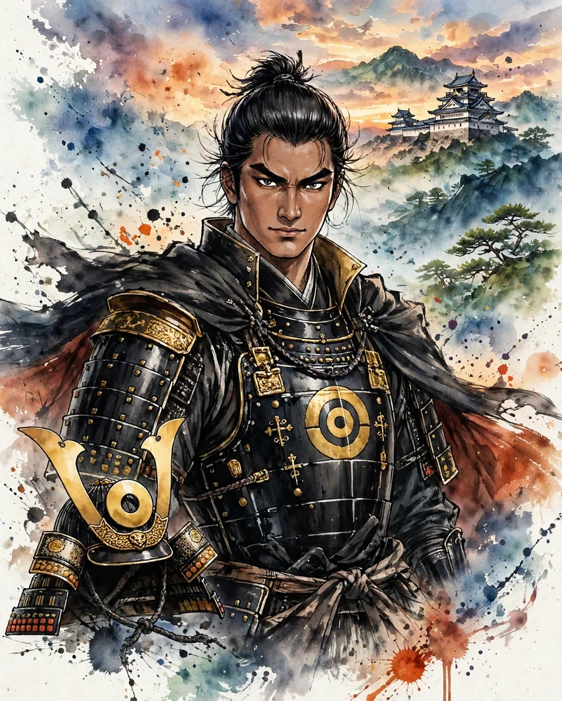

Kato Kiyomasa
加藤清正 (かとう きよまさ)

| Years | 1562–1611 |
|---|---|
| House | Kato clan |
| Region | Kyushu & Okinawa |
| Era | Azuchi-Momoyama period |
Overview
A native of Owari, he served Toyotomi Hideyoshi as a retainer raised from childhood in his service. He is counted among the Seven Spears of Shizugatake, became a daimyo of Higo, and built Kumamoto Castle. In the invasions of Korea he served in the vanguard.
Life
Tradition says he was born into a blacksmith's family in Owari, and he served Hashiba Hideyoshi from his childhood. He is counted as one of the 'Seven Spears of Shizugatake,' who won distinction at the Battle of Shizugatake (1583). After the conquest of Kyushu he was given half of Higo Province and pressed ahead with the construction of Kumamoto Castle. In the Bunroku campaign he led the Second Division, advanced north through the Korean Peninsula, and there are records of his reaching as far as Hamgyong Province. At the Battle of Sekigahara he confronted Western Army forces in Kyushu as part of the Eastern Army, and after the war he held the whole province of Higo. On the way back from an audience at Nijo Castle, he died in 1611 while returning to Kumamoto.
In battle
Kiyomasa's generalship was bound up with the civil engineering talent represented by castle building and flood control. Kumamoto Castle has a layout strongly conscious of actual combat, and is known for the 'musha-gaeshi' (warrior-repelling) design of its stone walls and for devices in preparation for emergencies. In the invasions of Korea he carried out forced marches in lands where supply was difficult. The anecdote of the tiger hunt is famous, but this is considered an embellishment from tales of the Edo period.
Arms and equipment
Kiyomasa is spoken of as a master of the spear, and his exploits at Shizugatake shaped that image. The tale of his grappling with a tiger during the invasions of Korea is a tradition symbolizing his bravery. His practical talent, visible in the stone walls and weirs of Kumamoto Castle, can be read from the sources as Kiyomasa's real image, alongside his martial skill.
Character and records
Kiyomasa's Buddhist faith (in the Nichiren school) was deep, and within his domain he carried out many flood-control and land-reclamation projects. There is debate over assessments of the invasions of Korea and of his stance of loyalty toward the Toyotomi house. In Kumamoto he is still affectionately called 'Seisho-ko-san' today, and is remembered in the region on both sides of his work, castle building and flood control.
In literature
taikoki, sekigahara, tokugawa
In Shinsho Taikoki he is depicted as a retainer raised from childhood by Hideyoshi, and in Sekigahara and Tokugawa Ieyasu, Kiyomasa's age as a daimyo bound by gratitude to the Toyotomi is depicted.
Castles connected with Kato Kiyomasa
Recommended books on the age of the warlords
Castle History
Japanese Castles 1540–1640
Author: Stephen Turnbull
The great castles of Japan's warring-states era: how the strongholds of the daimyo were built, defended and attacked, explained by the leading English-language historian of samurai warfare, with illustrations throughout.
View at Pickwick BookshopCheck the price at Pickwick Bookshop
Castle History
Japanese Castles AD 250–1540
Author: Stephen Turnbull
The earlier half of the story: from the first fortifications of ancient Japan through the rise of the first true castles, again by Stephen Turnbull. Read it before the 1540–1640 volume to cover the whole arc.
View at Barnes & NobleCheck the price at Barnes & Noble
Castle Guide
Samurai Castles: History / Architecture / Visitors' Guides
Hundreds of color photographs and close-up detail on Japan's most important surviving samurai castles — their history, design and military features, with guidance for visitors. The best single companion for castle sightseeing.
View at Barnes & NobleCheck the price at Barnes & Noble
Book links on this page go to the retailers' product pages. Prices and availability are shown on the retailer's page.